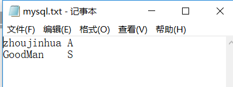
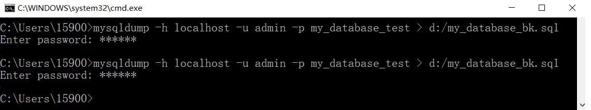
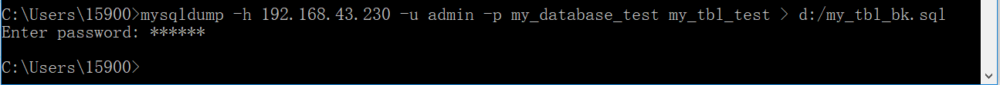

mysql
mysql一、环境安装与配置二、连接上数据库后1、连接数据库2、查看已有数据库3、修改账号密码4、创建数据库5、创建表A、首先，要选中一个数据库，在其上操作B、创建一个表6、删除表7、删除数据库8、向表中插入记录9、更新表中记录10、将表中数据清空11、用文本方式将数据导入表中12、导入 sql命令13、修改命令行 root 密码（危险性太高，未尝试）三、备份&恢复数据库：(命令在DOS的\mysql\bin目录下执行)1、导出整个数据库（备份）2、数据库的导入（恢复）3、导出一个表4、导出一个数据结构5、带语言参数导出
一、环境安装与配置
二、连接上数据库后
1、连接数据库
x
C:\Users\15900>mysql -h 127.0.0.1 -u admin -pEnter password: ******Welcome to the MySQL monitor. Commands end with ; or \g.Your MySQL connection id is 45Server version: 5.7.20-log MySQL Community Server (GPL)Copyright (c) 2000, 2017, Oracle and/or its affiliates. All rights reserved.Oracle is a registered trademark of Oracle Corporation and/or itsaffiliates. Other names may be trademarks of their respectiveowners.Type 'help;' or '\h' for help. Type '\c' to clear the current input statement.mysql>
2、查看已有数据库
mysql> show databases;+--------------------+| Database |+--------------------+| information_schema || mysql || performance_schema || sakila || sys || world |+--------------------+6 rows in set (0.00 sec)3、修改账号密码
4、创建数据库
xxxxxxxxxx创建数据库mysql> create database my_test;Query OK, 1 row affected (0.01 sec)查看之mysql> show databases;+--------------------+| Database |+--------------------+| information_schema || my_test || mysql || performance_schema || sakila || sys || world |+--------------------+7 rows in set (0.00 sec)5、创建表
A、首先，要选中一个数据库，在其上操作
mysql> use my_test;Database changedB、创建一个表
mysql> create table first_tbl (name VARCHAR(20), age CHAR(1));Query OK, 0 rows affected (0.09 sec)mysql> show tables;+-------------------+| Tables_in_my_test |+-------------------+| first_tbl |+-------------------+1 row in set (0.00 sec)mysql>6、删除表
xxxxxxxxxxmysql> show tables;+-------------------+| Tables_in_my_test |+-------------------+| first_tbl |+-------------------+1 row in set (0.00 sec)mysql> drop table first_tbl;Query OK, 0 rows affected (0.02 sec)mysql> show tables;Empty set (0.00 sec)
7、删除数据库
xxxxxxxxxxmysql> show databases;+--------------------+| Database |+--------------------+| information_schema || my_test || mysql || performance_schema || sakila || sys || world |+--------------------+7 rows in set (0.00 sec)mysql> drop database my_test;Query OK, 0 rows affected (0.02 sec)mysql> show databases;+--------------------+| Database |+--------------------+| information_schema || mysql || performance_schema || sakila || sys || world |+--------------------+6 rows in set (0.00 sec)
8、向表中插入记录
xxxxxxxxxxmysql> create database my_database_test;Query OK, 1 row affected (0.00 sec)mysql> show databases;+--------------------+| Database |+--------------------+| information_schema || my_database_test || mysql || performance_schema || sakila || sys || world |+--------------------+7 rows in set (0.00 sec)mysql> use my_database_test;Database changedmysql> create table my_tbl_test(name VARCHAR(20), age CHAR(1));Query OK, 0 rows affected (0.03 sec)mysql> show tables;+----------------------------+| Tables_in_my_database_test |+----------------------------+| my_tbl_test |+----------------------------+1 row in set (0.00 sec)向表中插入一条记录mysql> insert into my_tbl_test values("zhoujinhua", "A");Query OK, 1 row affected (0.02 sec)查看表中的记录mysql> select * from my_tbl_test;+------------+------+| name | age |+------------+------+| zhoujinhua | A |+------------+------+1 row in set (0.00 sec)再插入一条记录mysql> insert into my_tbl_test values("GoodMan", "C");Query OK, 1 row affected (0.01 sec)mysql> select * from my_tbl_test;+------------+------+| name | age |+------------+------+| zhoujinhua | A || GoodMan | C |+------------+------+2 rows in set (0.00 sec)9、更新表中记录
mysql> select * from my_tbl_test;+------------+------+| name | age |+------------+------+| zhoujinhua | A || GoodMan | C |+------------+------+2 rows in set (0.00 sec)mysql> update my_tbl_test set age='M' where name='zhoujinhua';Query OK, 1 row affected (0.00 sec)Rows matched: 1 Changed: 1 Warnings: 0可以看到， zhoujinhua 的 age 由 A 变成了 Mmysql> select * from my_tbl_test;+------------+------+| name | age |+------------+------+| zhoujinhua | M || GoodMan | C |+------------+------+2 rows in set (0.00 sec)mysql>
10、将表中数据清空
mysql> select * from my_tbl_test;+------------+------+| name | age |+------------+------+| zhoujinhua | M || GoodMan | C |+------------+------+2 rows in set (0.00 sec)mysql> DELETE FROM my_tbl_test;Query OK, 2 rows affected (0.01 sec)查看发现所有内容都被清空mysql> select * from my_tbl_test;Empty set (0.00 sec)mysql>
11、用文本方式将数据导入表中
文本内容：

mysql> select * from my_tbl_test;Empty set (0.00 sec)导入并查看之mysql> LOAD DATA LOCAL INFILE "D:/mysql.txt" INTO TABLE my_tbl_test;Query OK, 2 rows affected, 2 warnings (0.01 sec)Records: 2 Deleted: 0 Skipped: 0 Warnings: 2发现格式比较混乱mysql> select * from my_tbl_test;+---------------+------+| name | age |+---------------+------+ | NULL |hua A| GoodMan S | NULL |+---------------+------+2 rows in set (0.00 sec)mysql>第二次尝试，为各个量都添加引号，并且中间只有一个空格
xxxxxxxxxxmysql> delete from my_tbl_test;Query OK, 4 rows affected (0.01 sec)mysql> select * from my_tbl_test;Empty set (0.00 sec)mysql> LOAD DATA LOCAL INFILE "D:/mysql.txt" INTO TABLE my_tbl_test;Query OK, 2 rows affected, 2 warnings (0.01 sec)Records: 2 Deleted: 0 Skipped: 0 Warnings: 2mysql> select * from my_tbl_test;+-------------------+------+| name | age |+-------------------+------+| NULL |nhua" "A"| "GoodMan" "S" | NULL |+-------------------+------+2 rows in set (0.00 sec)mysql>
经历N次尝试，终于成功

代码如下：
xxxxxxxxxx如果遇到 NULL 值，应当采用 `\n` 代替查看，发现是一个空表mysql> select * form my_tbl_test;ERROR 1064 (42000): You have an error in your SQL syntax; check the manual that corresponds to your MySQL server version for the right syntax to use near 'form my_tbl_test' at line 1从本地加载一个文件mysql> LOAD DATA LOCAL INFILE "D:/mysql.txt" INTO TABLE my_tbl_test;Query OK, 2 rows affected (0.01 sec)Records: 2 Deleted: 0 Skipped: 0 Warnings: 0成功查看到数据，加载之后，格式正确mysql> select * from my_tbl_test;+------------+------+| name | age |+------------+------+| zhoujinhua | A || GoodMan | S |+------------+------+2 rows in set (0.00 sec)12、导入 sql命令
sql 文件内容如下：

xmysql> use my_database_test;Database changedmysql> source d:/show_tbl.sql+------------+------+| name | age |+------------+------+| zhoujinhua | A || GoodMan | S |+------------+------+8 rows in set (0.00 sec)
13、修改命令行 root 密码（危险性太高，未尝试）
xmysql> UPDATE mysql.user SET password=PASSWORD('新密码') WHERE User='root';mysql> FLUSH PRIVILEGES;
三、备份&恢复数据库：(命令在DOS的\mysql\bin目录下执行)
1、导出整个数据库（备份）
网上小朋友们的教材很不走心，让我卡了好长时间，备份的最小单位是一个数据库
先查看有哪些数据库mysql> show databases;+--------------------+| Database |+--------------------+| information_schema || my_database_test || mysql || performance_schema || sakila || sys || world |+--------------------+7 rows in set (0.00 sec)然后，选择一个数据库，备份之
xxxxxxxxxx最关键的一点，mysqldump 这个命令，是在命令行中执行，而不是在 mysql 内部执行。主要在这里浪费了时间
的个姿势，采用 IP 来备份
xxxxxxxxxxC:\Users\15900>mysqldump -h 192.168.43.230 -u admin -p my_database_test > d:/my_database_bk2.sqlEnter password: ******同样生成了目标文件。
2、数据库的导入（恢复）
x
先另创建一个数据库mysql> create database my_abc;Query OK, 1 row affected (0.00 sec)mysql> show databases;+--------------------+| Database |+--------------------+| information_schema || my_abc || my_database_test || mysql || performance_schema || sakila || sys || world |+--------------------+8 rows in set (0.00 sec)切换新建的数据库mysql> use my_abc;Database changed查看表，啥都没有mysql> show tables;Empty set (0.00 sec)将之前备份的数据库恢复mysql> source d:/my_database_bk.sqlQuery OK, 0 rows affected (0.00 sec)Query OK, 0 rows affected (0.00 sec)Query OK, 0 rows affected (0.00 sec)Query OK, 0 rows affected (0.01 sec)Query OK, 0 rows affected (0.00 sec)Query OK, 0 rows affected (0.00 sec)Query OK, 0 rows affected (0.00 sec)Query OK, 0 rows affected (0.00 sec)Query OK, 0 rows affected, 1 warning (0.00 sec)Query OK, 0 rows affected (0.00 sec)Query OK, 0 rows affected (0.00 sec)Query OK, 0 rows affected (0.00 sec)Query OK, 0 rows affected (0.00 sec)Query OK, 0 rows affected (0.03 sec)Query OK, 0 rows affected (0.00 sec)Query OK, 0 rows affected (0.00 sec)Query OK, 0 rows affected (0.00 sec)Query OK, 8 rows affected (0.00 sec)Records: 8 Duplicates: 0 Warnings: 0Query OK, 0 rows affected (0.00 sec)Query OK, 0 rows affected (0.00 sec)Query OK, 0 rows affected (0.00 sec)Query OK, 0 rows affected, 2 warnings (0.00 sec)Query OK, 0 rows affected (0.00 sec)Query OK, 0 rows affected (0.00 sec)Query OK, 0 rows affected (0.00 sec)Query OK, 0 rows affected (0.00 sec)Query OK, 0 rows affected (0.00 sec)Query OK, 0 rows affected (0.00 sec)查看之，果然有新建的表mysql> show tables;+------------------+| Tables_in_my_abc |+------------------+| my_tbl_test |+------------------+1 row in set (0.00 sec)查看表的结构mysql> desc my_tbl_test;+-------+-------------+------+-----+---------+-------+| Field | Type | Null | Key | Default | Extra |+-------+-------------+------+-----+---------+-------+| name | varchar(20) | YES | | NULL | || age | char(1) | YES | | NULL | |+-------+-------------+------+-----+---------+-------+2 rows in set (0.00 sec)查看表中内容，很完美的恢复mysql> select * from my_tbl_test;+------------+------+| name | age |+------------+------+| zhoujinhua | A || GoodMan | S || zhoujinhua | A || GoodMan | || zhoujinhua | A || GoodMan | S || zhoujinhua | A || GoodMan | S |+------------+------+8 rows in set (0.00 sec)3、导出一个表

4、导出一个数据结构

xxxxxxxxxx-d 没有数据 --add-drop-table 在每个create语句之前增加一个drop table5、带语言参数导出
xxxxxxxxxx不知道这条语句干了什么，先写在这里mysqldump -uadmin -p --default-character-set=latin1 --set-charset=gbk --skip-opt database_name > outfile_name.sql